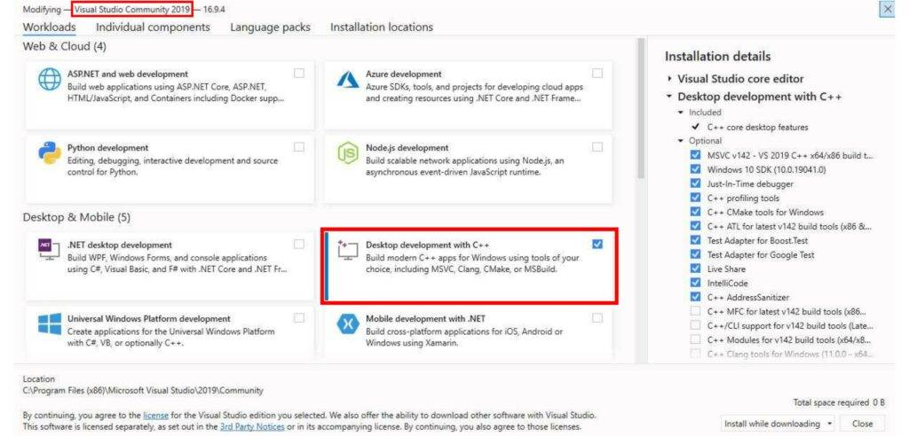

Windows下编译Azerothcore源码
前言
目前魔兽世界WLK版本的源码主要是TrinityCore和Azerothcore。Azerothcore脱胎于TrinityCore，更专注于源码修复，游戏体验更好。
Azerothcore的Wiki很强大，基本上跟着Wiki走就能顺利编译，不过国内看不了，而且是英文。在这里，我根据Azerothcore的Wiki来给大家做个教程。
Azerothcore编译的环境可以是Win，也可以是liunx，我很喜欢在liunx环境下搭建，因为流畅和稳定。但鉴于大家普遍用的是Win，那我就首先讲解下Windows下编译Azerothcore源码，之后再讲其他环境的。
环境准备
编译的系统环境很重要，否则后期会出现各种各样的BUG，建议大家选择纯净版的Win7或Win10进行搭建。在这里我选用的是Win10专业版（64位），在D盘新建文件夹”eryuwow“。Azerothcore需要的软件环境如下：
- Git Extensions
- Boost ≥ 1.70 – 1.74
- MySQL ≥ 5.7.0
- OpenSLL ≥ 1.0.x
- CMake ≥ 3.16
- MS Visual Studio (Community) ≥ 16.4 (2019) (Desktop) (No preview)
以上软件和系统环境补丁我都打包在了百度盘内，如果你访问不了下载链接的话，请点击下载 ，提取码：f9nq。
Git Extensions
首先你需要下载Git扩展，点这里下载，下载后默认安装即可。
MS Visual Studio
接着下载Visual Studio，点这里下载：https://visualstudio.microsoft.com/zh-hans/downloads/，注意下载”社区版“，安装时候选择开发环境为C++：

MySQL
继续下载MySQL社区版，点这里下载：https://dev.mysql.com/downloads/mysql/8.0.html，注意是200来MB的那个，选择”No thanks, just start my download“，下载完成后是zip压缩文件，解压至D盘“eryuwow“文件夹。
设置系统变量
右键”此电脑“-”属性“，选择右边的”高级系统设置“，点击”环境变量“，设置系统变量为mysql中的bin目录，如上图所示。请无视截图内的mysql-5.7.31版本号，修改为你自己下载的版本号就行。
数据库安装
以管理员模式运行cmd，首先依次输入：
d： |
至此，MySQL安装完成，如果你想连接MySQl，我常用的工具是Navicat，请自行下载安装，连接你的MySQL数据库，另外可以在“服务”里面找到MySQL，可以停止或重启MySQL。
Cmake
继续安装Cmake，点这里下载，注意选择”cmake-3.21.0-windows-x86_64.msi“文件下载，安装时注意选择：
OpenSSL
继续安装OpenSSL，点这里下载，注意选择”Win64 OpenSSL v1.1.1k“文件下载，安装时注意选择：
如果在安装 OpenSSL 时收到“Missing Microsoft Visual C++ 2008 Redistributable”错误消息，请下载Microsoft Visual C++ 2008 Redistributable Package (x64) (1.7MB Installer) 并安装它。
Boost
继续安装Boost：点这里下载，一路默认安装即可，安装完毕后，C盘会有这个路径：C:\local\boost_1_60_0（版本号可能不同）。
环境变量里面，新建系统变量，变量名为“BOOST_ROOT”，变量值为C盘安装路径，如图所示：
至此，编译所需的软件环境安装完成。
源码编译
此部分但凡出现错误，请百度错误信息，或者检查之前环境搭建是否有误。
下载源码
进入D盘”eryuwow“文件夹，右键选择”Git Bash here“，弹出命令窗口，输入：
git clone https://gitee.com/gswxy/azerothcore-wotlk.git |
等待Azerothcore源码下载完成，关闭此命令框。完成后，“eryuwow”文件夹内会有”azerothcore-wolk“的文件夹，该文件夹内是源码。
配置编译方案
在D盘”eryuwow“文件夹内新建文件夹”build“；
打开Cmake，点击”Browse Source“，选择到”D:/eryuwow/azerothcore-wotlk“文件夹；
点击”Browse Build“，选择到”D:/eryuwow/build“文件夹；
点击”Configure“，选择”Visual studio 16 2019“（根据你下载安装的Visual studio版本来选”，其余默认，点“Finish”，该步骤如果弹出警示框“Error in configuration process……”，看下你MySQL安装了没，服务启动了没；
选中Tools后面的复选框，如图所示：
再次点击”Configure“，然后点击”Generate“，这时构建文件已全部生成在build文件夹内，以后如果你改了源码想重新编译，请先清空build文件夹；
选择”Open Project“，即可打开Visual studio，开始编译源码。
编译源码
首选确保资源管理器内，选中”ALL Build“，活动解决方案配置设置为”Release“，如图所示：
然后点击菜单栏“生成”-“生成解决方案”（或直接按F7），Visual studio将开始编译，编译时长取决于你电脑配置，成功后会有类似提示：
========== Build: 22 succeeded, 0 failed, 0 up-to-date, 1 skipped ========== |
如果有失败的（failed），请往上翻看编译日志，排查问题。编译成功的文件在“D:\eryuwow\build\bin\Release\”文件夹内。
地图和DBC提取
- 复制mapextractor.exe、mmaps_generator.exe、vmap4extractor.exe、vmap4assembler.exe四个文件到魔兽世界客户端目录内（wow.exe所在的目录）；
- 复制“D:/eryuwow/azerothcore-wotlk/apps/extractor“内的”extractor.bat“文件到魔兽世界客户端目录内；
- 在魔兽世界客户端文件夹内创建mmaps和vmaps文件夹；
- 双击”extractor.bat“文件选择”4 – Extract all“选项运行，提取时长取决于你电脑配置；
- 在”eryuwow“文件夹内新建”data“文件夹，将提取出来的vmaps、maps、dbc、cameras 移动到data文件夹中。
数据库设置
用Navicat或其他工具连接你的数据库，右键数据库选择”运行SQL文件“，SQL文件为“D:\eryuwow\azerothcore-wotlk\data\sql\create”的”create_mysql.sql“。
进入“D:\eryuwow\azerothcore-wotlk\apps\db_assembler”文件夹，右键空白处，选择“Git Bash here”，输入：
bash db_assembler.sh
输入数字“5”回车，即可选择“5) import-all: Assemble & Import all”执行，完毕后，你会在SQL里看到“acore_auth、acore_characters、acore_world”三个数据库及里面的各种表。提示：如果你想改数据库账户密码（默认账密都为acore），请在第一步前编辑脚本配置：
- 复制“D:\eryuwow\azerothcore-wotlk\conf\dist\config.sh”到“D:\eryuwow\azerothcore-wotlk\conf\config.sh”；
- 右键编辑“cofig.sh”文件，这里我选择的Notepad++软件进行编辑，推荐大家安装；
- 找到以下文件，修改我加粗的部分（acore），分别是“acore_auth、acore_characters、acore_world”三个数据库的账号和密码，修改成你想要的即可：
DB_AUTH_CONF=${DB_AUTH_CONF:-"MYSQL_USER='**acore**'; \ |
服务器设置
复制“configs”文件夹和authserver.exe和worldserver.exe文件到“eryuwow”文件夹内；
复制MySQL文件夹内（MySQL\MySQL Server 8.x\lib\）的libmysql.dll文件到“eryuwow”文件夹内；
复制OpenSSL安装文件夹内（C:\OpenSSL-Win64\bin）的libssl-1_1-x64.dll和libcrypto-1_1-x64.dll文件到“eryuwow”文件夹内；
进入“configs”文件夹，同目录内复制worldserver.conf.dist 和 authserver.conf.dist，然后将副本重命名为不带 .dist扩展名的同名副本；
编辑worldserver.conf，按以下修改：
DataDir = "data"
提示：如果前面你修改了三个数据库的密码，请修改以下两处：
①worldserver.conf
LoginDatabaseInfo = "127.0.0.1;3306;acore;acore;acore_auth"
WorldDatabaseInfo = "127.0.0.1;3306;acore;acore;acore_world"
CharacterDatabaseInfo = "127.0.0.1;3306;acore;acore;acore_characters"②authserver.conf
LoginDatabaseInfo = "127.0.0.1;3306;acore;acore;acore_auth"
启动服务器
在确保MySQL正常运行的前提下，双击打开“authserver.exe”，接着双击打开“worldserver.exe”，两个窗口在服务器运行时候都不要关闭；
在worldserver.exe窗口内输入以下内容即可创建账号：
account create $account $password #例如我想创建用户名为1，密码为2的账户，则输入account create 1 2
将账号提升为GM权限：
account set gmlevel $account #level #realmid #例如我想将用户名为1的账户设置为最高权限的GM，则输入account set gmlevel 1 3 -1
客户端设置
在客户端文件夹内新建txt文件，如“耳语魔兽.txt”，输入以下内容：
del /f /s /q D:\eryuwow\World of Warcraft\Cache #更改为你的魔兽世界客户端路径 |
更改“耳语魔兽.txt”为“耳语魔兽.bat”，双击运行打开魔兽世界，尽情玩耍吧！
 微信
微信 支付宝
支付宝